Mały ogród z angielską nutą.
Lokalizacja
Selzach, Szwajcaria
Powierzchnia ogrodu
200 m²
Styl
nowoczesny z elementami angielskiego ogrodu bylinowego, akcentami japońskimi i śródziemnomorskimi
O PROJEKCIE
Założenia
projektu.
Główne elementypalmety grabowe, pergola z paleniskiem, cieniste rabaty, taras z donicami, zielnik, krzewy owocowe
Niewielki ogród, w którym nowoczesna architektura spotyka się z bujnymi, angielskimi rabatami, subtelnymi akcentami japońskimi i odrobiną śródziemnomorskiego klimatu. Na powierzchni zaledwie 200 m² zaprojektowałam przestrzeń pełną roślin, kolorów i przytulnych miejsc do wypoczynku.
Jednym z najważniejszych założeń było zapewnienie prywatności bez nadmiernego zagęszczania nasadzeń. Zaproponowałam więc graby lub laurowiśnie prowadzone w formie palmet, które tworzą zielone ekrany, przesłaniając sąsiednią zabudowę, a jednocześnie pozostawiają miejsce na kwitnące rabaty.
W zacienionej części ogrodu wąski pas trawnika zastąpiłam ścieżką otoczoną hortensjami, funkiami, paprociami i tawułkami. Dzięki temu powstał przyjemny, zielony zakątek, w którym dobrze odnajdują się rośliny lubiące cień i wilgotniejsze podłoże.
Na tarasie znalazło się miejsce na wygodne meble wypoczynkowe, wiszący kokon i duże terakotowe donice z roślinami. W narożniku ogrodu zaprojektowałam kameralną strefę z drewnianą pergolą, ławkami i paleniskiem w stalowej misie cortenowej. Nie zabrakło również niewielkiej części użytkowej z podwyższonym zielnikiem i krzewami owocowymi.
To ogród, w którym każdy fragment przestrzeni ma swoje zadanie, a różnorodne nasadzenia tworzą zielone otoczenie do codziennego wypoczynku.
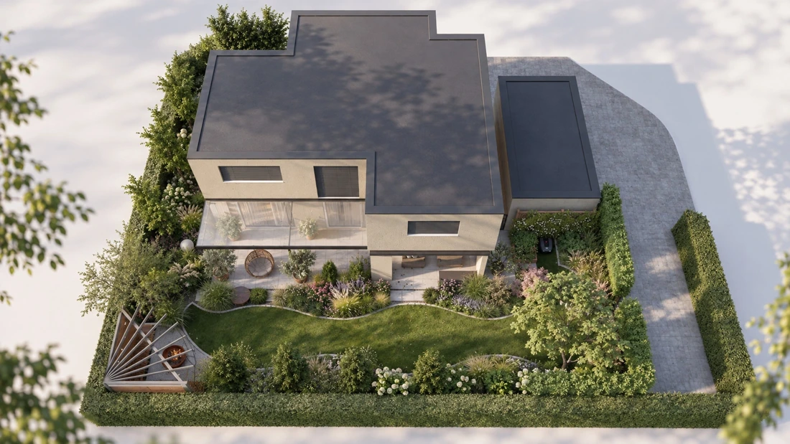
WIZUALIZACJE PROJEKTU
Ogród z każdej strony.

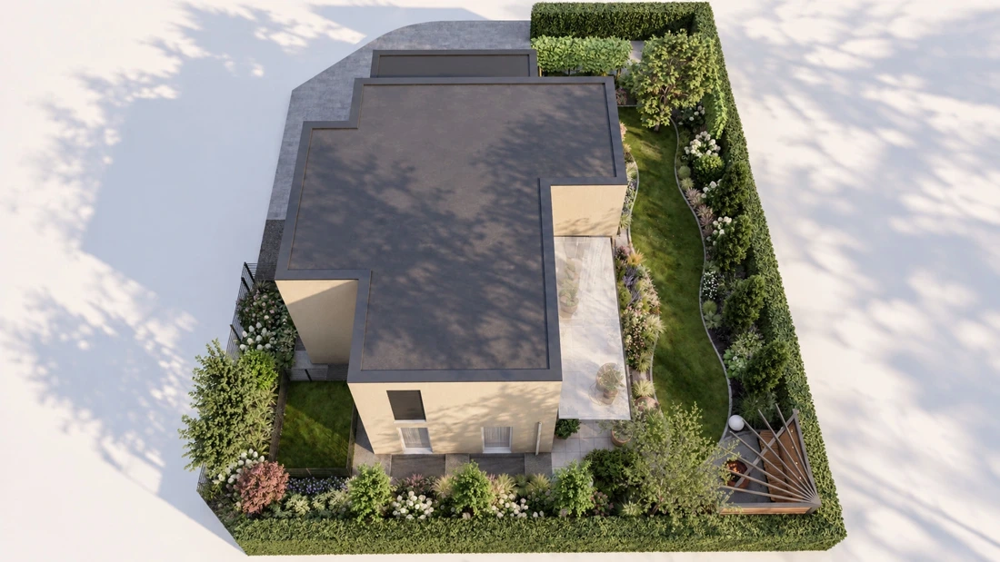

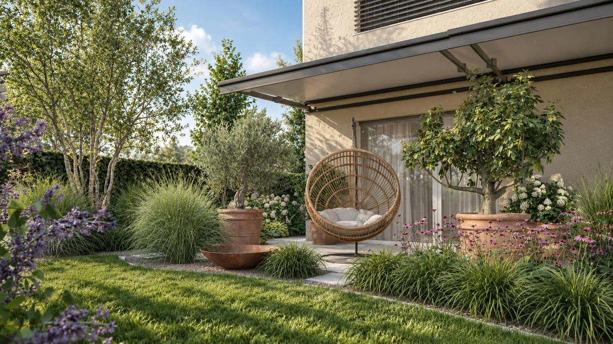

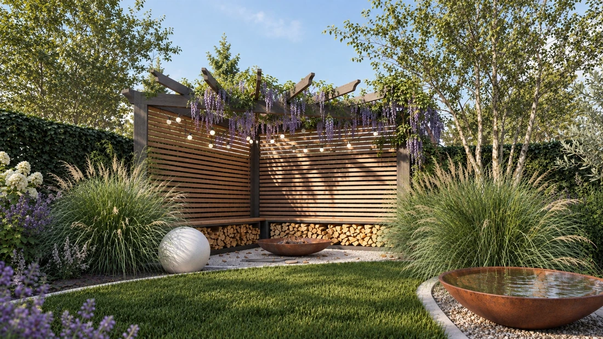

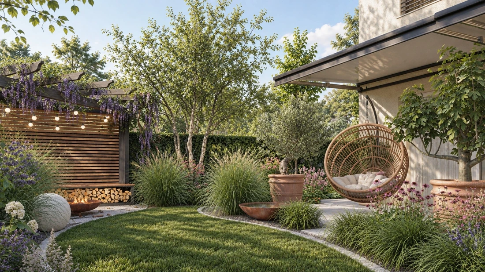

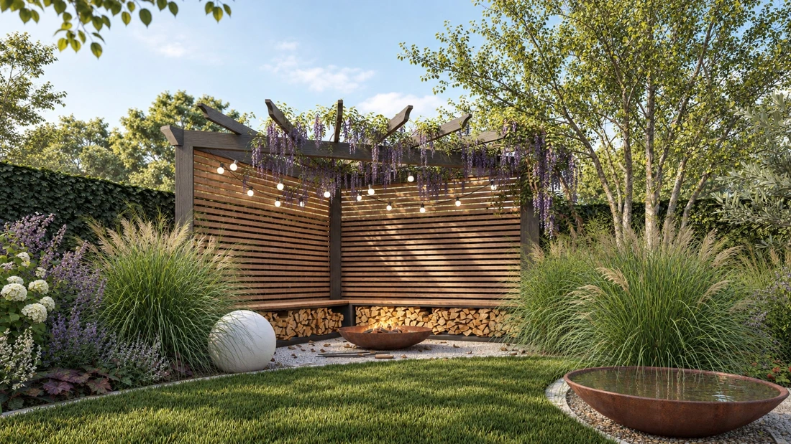

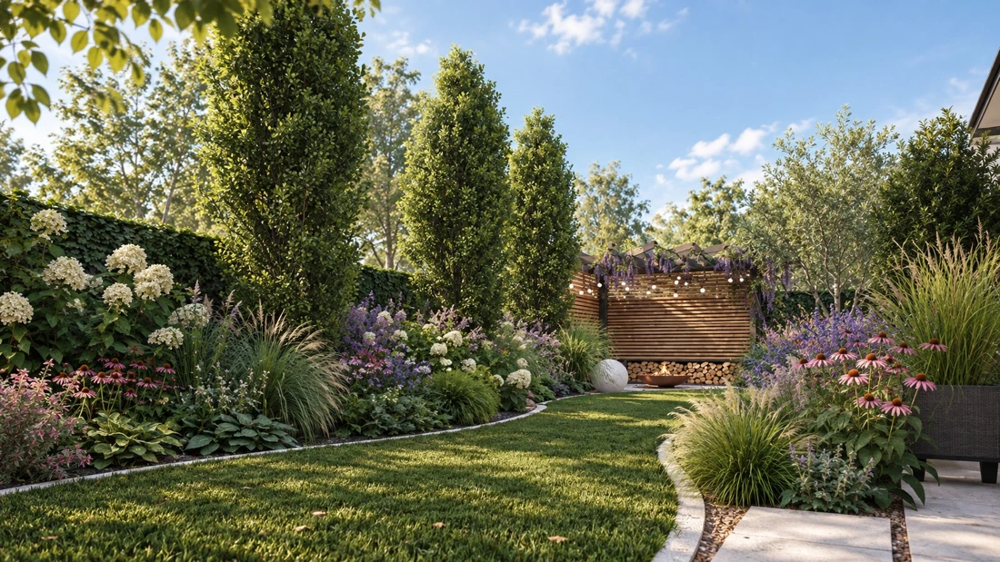

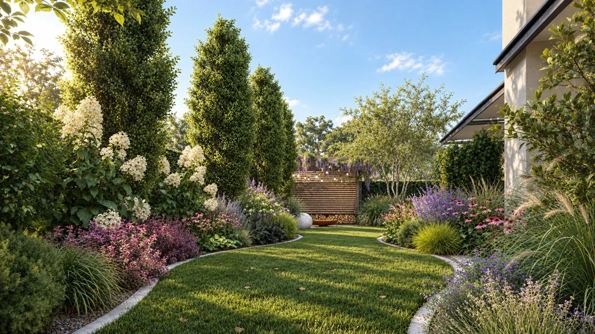

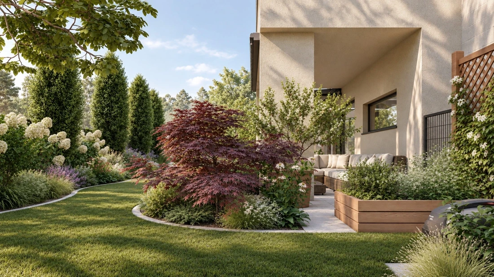

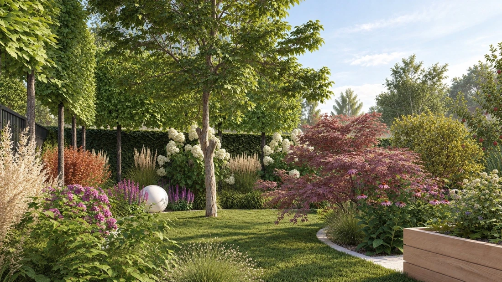

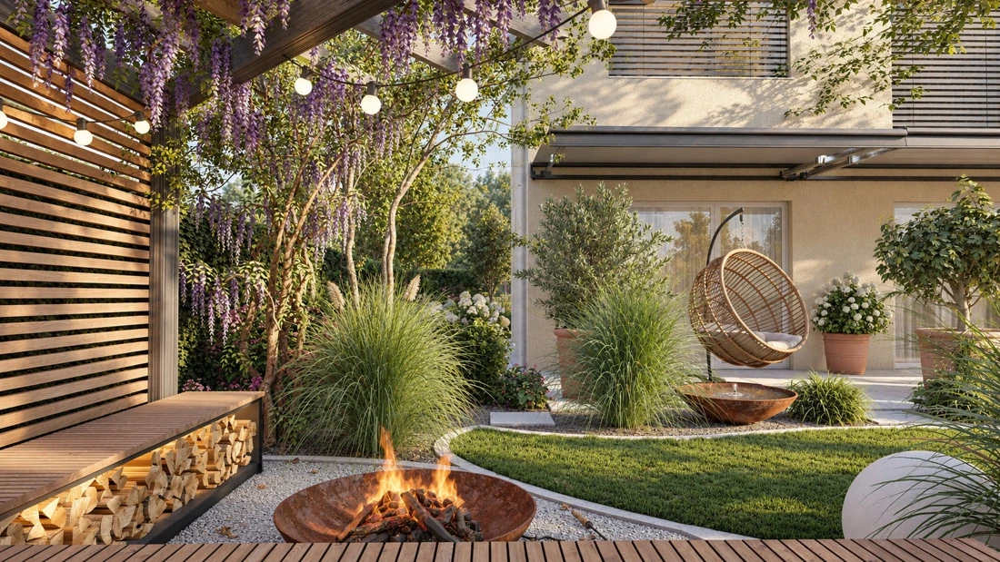

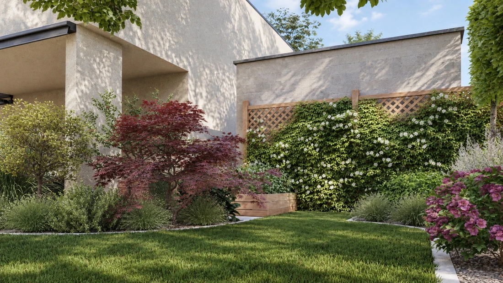
KOLEJNY OGRÓD MOŻE BYĆ TWÓJ